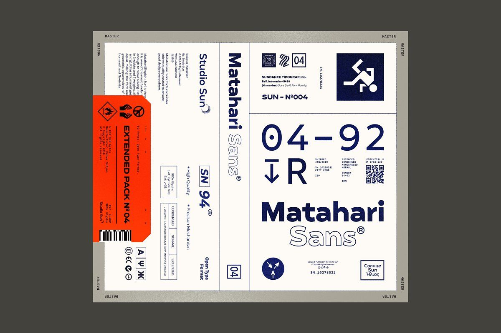
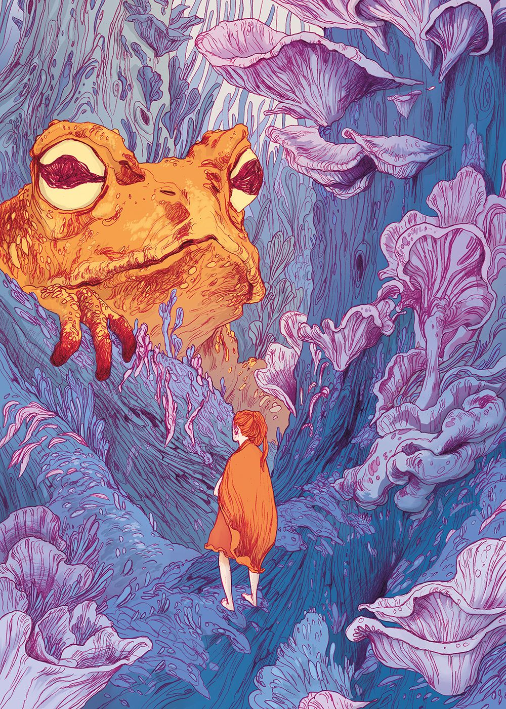
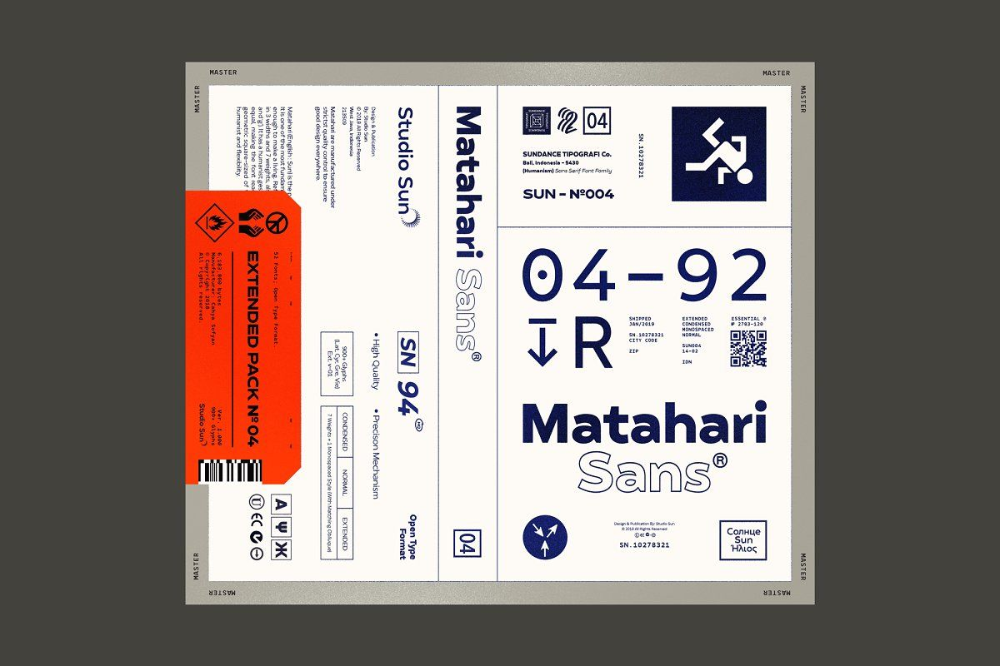
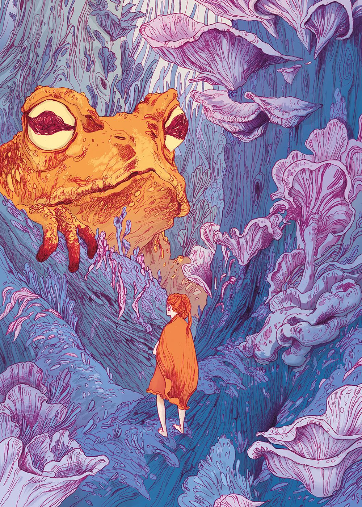
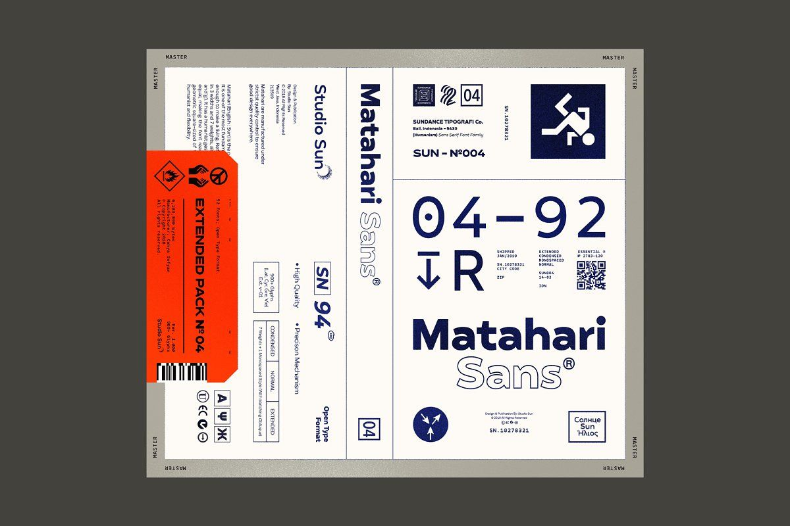
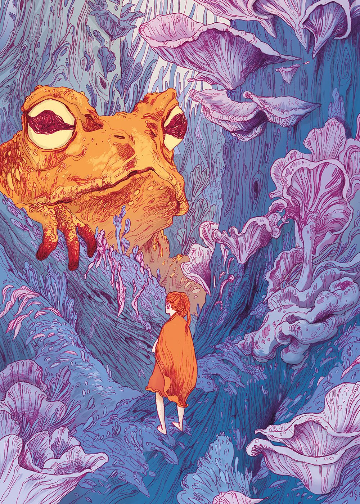
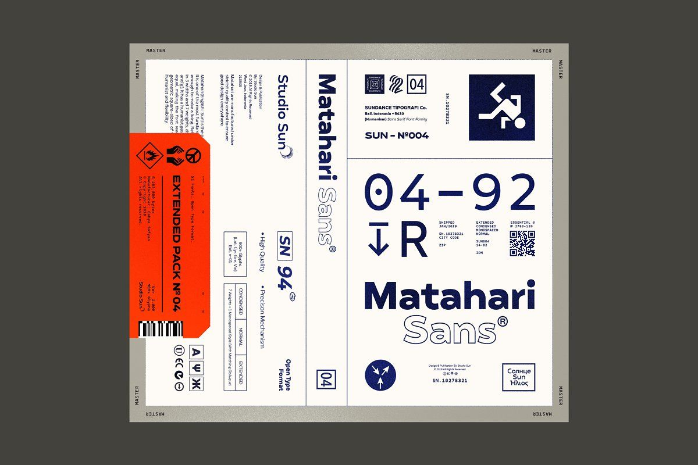
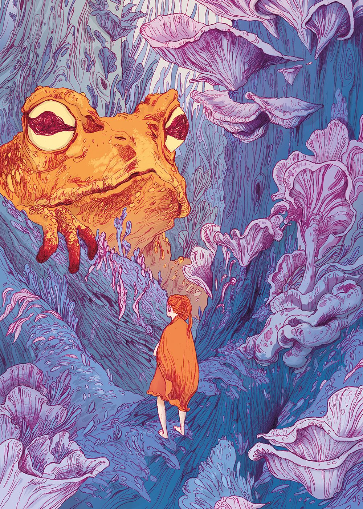

_Kidupnxt Ain't Fit For Love (ft_ FTG Santiago).jpg)


_Incredible gestural painting by Lü Shoukun (1919-1975).png)


 _ 오늘 조커 4회차 관람을 하고 맛있는 것도 먹고 좋아하는 작가님들과 시베리....jpg)


 _ Twitter.png)


 _ Twitter.png)


 _ Twitter.png)


 _ Twitter.png)


, Claudio Clemente.png)


 _ Discogs.jpg)


 





, Cane T_ArtStation - BB-L Communication and control device_ (Radio), Cane T.png)

 DVD New & Sealed_NEW & SEALED FREE SHIPPING The Belgian filmmaking team of brothers Luc and Jean-Pierre Dardenne (THE KID WITH A BIKE) turned heads with ROSETTA, an intense viriti drama t....jpg)


 _ Twitter.png) 


